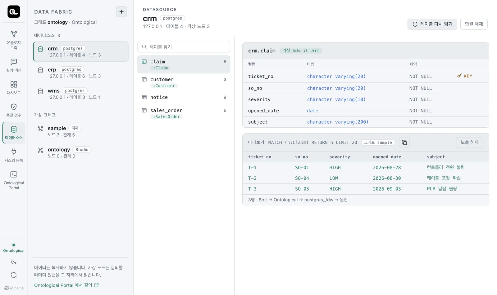
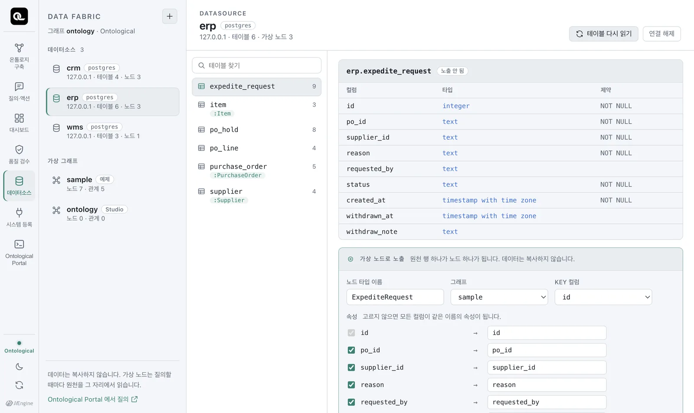

원천 데이터베이스를 연결하고, 테이블과 컬럼을 살펴보고, 데이터를 복사하지 않고 미리보기까지 해 봅니다. 데이터 패브릭이 무엇인지 손으로 익히는 장입니다.
데이터 패브릭이란#
회사의 데이터는 여러 데이터베이스에 흩어져 있습니다. 보통은 이것을 데이터 웨어하우스로 복사(ETL)해 한곳에 모은 뒤 분석합니다. 복사본은 원본보다 늦고, 권한을 두 군데서 관리해야 하며, 원본이 바뀌면 다시 복사해야 합니다.
데이터 패브릭은 반대로 갑니다. 데이터는 원래 자리에 두고, 질의할 때마다 그 자리에서 읽습니다. Ontological DB는 원천 테이블을 그래프의 노드처럼 보이게 하는 가상 노드를 만들어 이것을 합니다. 옮기는 것은 데이터가 아니라 이름과 연결뿐입니다.
| 복사(ETL) | 데이터 패브릭 | |
|---|---|---|
| 데이터 위치 | 웨어하우스에 사본 | 원천 그대로 |
| 신선도 | 마지막 적재 시점 | 질의하는 순간 |
| 권한 | 원천과 사본 두 곳 | 원천 한 곳 |
| 쓰기 | 사본에 써도 원천은 그대로 | 가상 노드는 읽기 전용, 쓰기는 원천 시스템으로 |
데이터소스 탭 열기#
홈에서 「데이터소스」 카드를 누릅니다.

| 영역 | 내용 |
|---|---|
| 왼쪽 위 데이터소스 | 연결된 원천 DB. 예제로 crm, erp, wms 세 개가 이미 연결돼 있습니다. |
| 왼쪽 아래 가상 그래프 | 가상 노드가 사는 그래프. 예제는 sample입니다. |
| 가운데 | 고른 데이터소스의 테이블. :Claim처럼 초록 라벨이 붙은 테이블은 이미 가상 노드로 노출된 것입니다. |
| 오른쪽 | 테이블의 컬럼·타입·제약과, 가상 노드라면 미리보기 20행 |
미리보기 아래의 3행 · Bolt → Ontological → postgres_fdw → 원천이라는 줄이 이 장의 핵심입니다. 이 행들은 어딘가에 복사된 것이 아니라, 지금 원천 crm.claim 테이블에서 읽어 온 것입니다.
테이블 살펴보기#
왼쪽에서 erp를 누르면 ERP의 테이블 6개가 나옵니다.

예제 원천의 테이블을 정리하면 다음과 같습니다.
| 데이터소스 | 테이블 | 키 | 주요 컬럼 | 가상 노드 |
|---|---|---|---|---|
erp |
supplier |
supplier_id |
name, country, tier | Supplier |
item |
item_id |
name, safety_stock | Item |
|
purchase_order |
po_id |
supplier_id, order_date, amount_usd, status | PurchaseOrder |
|
po_line |
po_line_id |
po_id, item_id, qty | (없음 — 6장에서 만듭니다) | |
po_hold, expedite_request |
액션이 남기는 기록(보류, 납기 독촉) | |||
wms |
shipment |
shipment_no |
ref_po_no, vendor_code, ship_status, delay_days, eta, priority | Shipment |
stock_daily |
(날짜, 품목, 창고) | on_hand_qty | ||
priority_change |
액션이 남기는 기록(우선순위 변경 이력) | |||
crm |
customer |
cust_no |
name, country | Customer |
sales_order |
so_no |
cust_no, sku_code, qty, status | SalesOrder |
|
claim |
ticket_no |
so_no, severity, opened_date, subject | Claim |
|
notice |
액션이 남기는 기록(고객 안내) |
컬럼 이름이 시스템마다 다릅니다
같은 “발주 번호”가 ERP에서는 po_id, WMS에서는 ref_po_no입니다. 같은 “품목”이 ERP에서는 item_id, CRM에서는 sku_code입니다. 실제 회사에서도 흔한 일이고, 이 차이를 관계로 이어 주는 것이 온톨로지의 역할입니다.
새 데이터소스 연결하기#
왼쪽 위 「＋」를 누르면 연결 폼이 열립니다. 엔진을 고르면 그 엔진에 필요한 칸이 나옵니다.
| 엔진 | 필요한 값 | 비고 |
|---|---|---|
| PostgreSQL | 호스트·포트·DB·스키마·계정·비밀번호 | macOS·Windows |
| MySQL / MariaDB | 호스트·포트·DB·계정·비밀번호 | macOS |
| Oracle | 호스트·포트·서비스 이름·소유자 스키마·계정·비밀번호 | macOS |
| SQL Server | 호스트·포트·DB·스키마(기본 dbo)·계정·비밀번호 | macOS |
데이터소스 이름은 영문 소문자·숫자·밑줄만 씁니다. 원천은 같은 PC든 사내망이든 인터넷이든 접속만 되면 됩니다. 원천 계정은 읽기 권한만 있는 계정을 쓰기를 권합니다.
화면은 문장을 미리 보여 줍니다. 예를 들어 PostgreSQL을 연결하면 실제로는 다음 문장이 실행됩니다(비밀번호는 화면에 '••••'로만 보입니다).
CREATE DATASOURCE mydb WITH ENGINE = 'postgres',
PARAMETERS = {host: '10.0.0.5', port: 5432, database: 'sales', schema: 'public',
user: 'reader', password: '••••'}
학교 실습 DB를 연결해 보세요
수업에서 쓰는 PostgreSQL이나 MySQL이 있다면 연결해 보세요. 연결하는 순간 테이블 목록과 컬럼 타입이 카탈로그로 들어옵니다. 데이터는 한 행도 복사되지 않습니다.
화면 뒤의 문장들#
데이터소스 탭은 모든 작업을 Ontological DB의 패브릭 문장으로 합니다. 화면 아래 「실행한 문장」에 무엇을 보냈는지 남습니다. 같은 문장을 포털에서 직접 쳐도 됩니다.
| 문장 | 하는 일 |
|---|---|
SHOW DATASOURCES |
연결된 데이터소스 목록 |
SHOW TABLES FROM erp |
데이터소스의 테이블과, 가상 노드로 노출됐는지 |
SHOW COLUMNS FROM erp.po_line |
컬럼·타입·NULL 여부·키 |
REFRESH DATASOURCE erp |
원천에 테이블이 늘었을 때 다시 읽기 |
DROP DATASOURCE erp |
연결 해제 (가상 노드가 쓰고 있으면 엔진이 거절합니다) |
포털에서 SHOW TABLES FROM erp를 실행하면 이렇게 나옵니다.
| table | columns | virtual_node |
|---|---|---|
| erp.expedite_request | 9 | |
| erp.item | 3 | Item |
| erp.po_hold | 8 | |
| erp.po_line | 4 | |
| erp.purchase_order | 5 | PurchaseOrder |
| erp.supplier | 4 | Supplier |
확인 문제
- 데이터소스 탭에서
wms의shipment테이블을 열고, 미리보기에서 지연일(delay_days)이 가장 큰 선적을 찾으세요. crm.claim미리보기에는 몇 행이 있나요? 그 행들은 어디에 저장돼 있나요?SHOW COLUMNS FROM wms.shipment가 돌려줄 컬럼 이름을 예상해 보고, 포털에서 확인하세요.
정답 보기
SHP-03(9일, CUSTOMS_HOLD — 세관 보류).- 3행(T-1, T-2, T-3). Ontological DB가 아니라 원천
crm스키마의claim테이블에 있습니다. 미리보기는 질의하는 순간 원천에서 읽어 온 것입니다. shipment_no,ref_po_no,vendor_code,ship_status,delay_days,eta,priority. (priority는 액션이 고치는 컬럼입니다.)